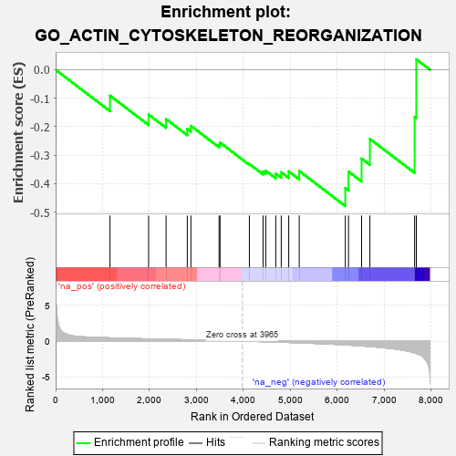
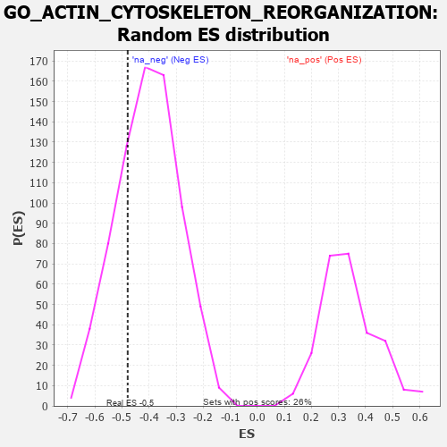

| | | Dataset | 7d |
| Phenotype | NoPhenotypeAvailable |
| Upregulated in class | na_neg |
| GeneSet | GO_ACTIN_CYTOSKELETON_REORGANIZATION |
| Enrichment Score (ES) | -0.47887588 |
| Normalized Enrichment Score (NES) | -1.190113 |
| Nominal p-value | 0.27038044 |
| FDR q-value | 0.64428693 |
| FWER p-Value | 1.0 |
Table: GSEA Results Summary

Fig 1: Enrichment plot: GO_ACTIN_CYTOSKELETON_REORGANIZATION
Profile of the Running ES Score & Positions of GeneSet Members on the Rank Ordered List
| PROBE | GENE SYMBOL | GENE_TITLE | RANK IN GENE LIST | RANK METRIC SCORE | RUNNING ES | CORE ENRICHMENT | | 1 | GAB1 | | | 1158 | 0.453 | -0.0911 | No |
| 2 | BRSK2 | | | 1979 | 0.308 | -0.1571 | No |
| 3 | BCAS3 | | | 2352 | 0.253 | -0.1734 | No |
| 4 | FER | | | 2803 | 0.183 | -0.2079 | No |
| 5 | DAPK3 | | | 2880 | 0.169 | -0.1971 | No |
| 6 | CDK5 | | | 3480 | 0.080 | -0.2628 | No |
| 7 | FES | | | 3501 | 0.077 | -0.2560 | No |
| 8 | ABL1 | | | 4125 | -0.027 | -0.3311 | No |
| 9 | RALA | | | 4416 | -0.079 | -0.3581 | No |
| 10 | EPS8 | | | 4474 | -0.088 | -0.3546 | No |
| 11 | PTK7 | | | 4687 | -0.136 | -0.3648 | No |
| 12 | TNIK | | | 4804 | -0.158 | -0.3603 | No |
| 13 | ARAP1 | | | 4963 | -0.191 | -0.3572 | No |
| 14 | PARVA | | | 5187 | -0.245 | -0.3556 | No |
| 15 | PARVB | | | 6168 | -0.528 | -0.4152 | Yes |
| 16 | CDC42 | | | 6236 | -0.548 | -0.3576 | Yes |
| 17 | TRPV4 | | | 6515 | -0.668 | -0.3120 | Yes |
| 18 | PAK1 | | | 6691 | -0.757 | -0.2428 | Yes |
| 19 | MCU | | | 7644 | -1.637 | -0.1653 | Yes |
| 20 | TRPM2 | | | 7680 | -1.712 | 0.0366 | Yes |
Table: GSEA details [plain text format]

Fig 2: GO_ACTIN_CYTOSKELETON_REORGANIZATION: Random ES distribution
Gene set null distribution of ES for GO_ACTIN_CYTOSKELETON_REORGANIZATION